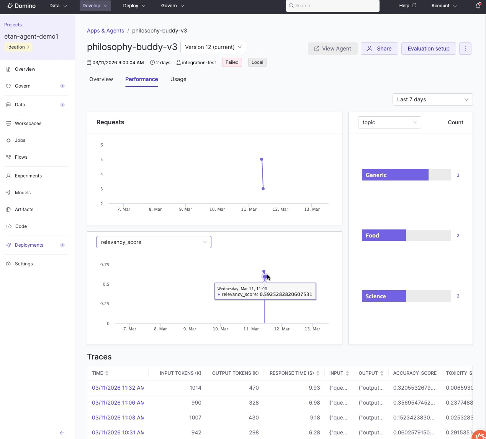
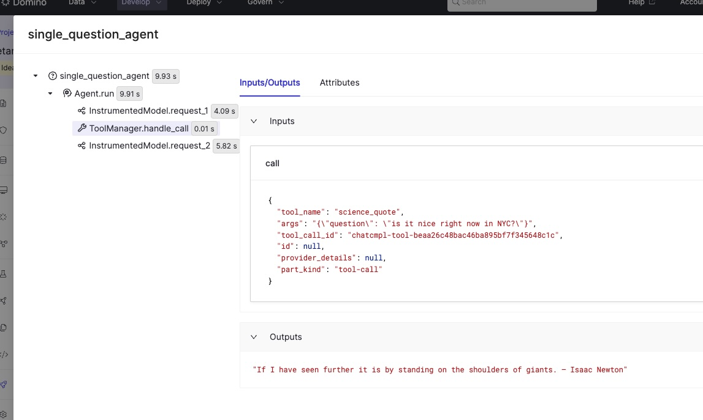
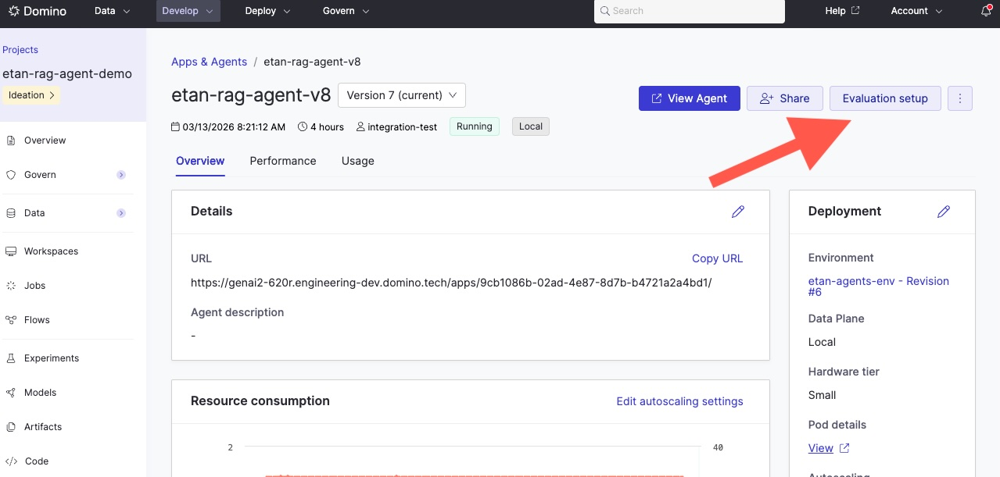

Monitor agentic systems
After deploying your agentic system to production, monitor its performance with real user interactions. Domino automatically collects production traces and provides dashboards to track performance, usage, and quality over time.
Monitor agent performance
Access monitoring views from your deployed agent's dashboard. These views show how your agent performs with real user interactions:
| View | What it shows |
|---|---|
| Overview | Deployment status and configuration details |
| Performance | Evaluation metrics as visualizations alongside production traces. Review metrics over time to spot trends and identify patterns in successful versus problematic interactions. |
| Usage | User invocations and interaction tracking |
The agent dashboard gives you an at-a-glance view of production performance, including evaluation metrics over time and a list of recent traces:

Click any trace to inspect the full execution path — every LLM call, tool invocation, and decision point, along with inputs, outputs, and evaluation scores:

Evaluate production traces
Production evaluations run out of band from your real-time agent app. Rather than evaluating inside the live request path, you write a separate evaluation script that fetches production traces, scores them, and logs the results back. This script runs as a Domino Job — typically on a schedule — so your agent's latency is never affected by evaluation overhead.
How it works: Your agent serves users in real time and collects traces automatically. A separate scheduled Job fetches those traces, runs your evaluation logic, and logs scores back to each trace. This gives you continuous quality monitoring without impacting production performance.
Finding your agent ID and version
To fetch production traces programmatically, you need the agent ID and agent version. Find these in the Domino UI after deploying your agent:

Production evaluation script
Use search_agent_traces() to fetch traces for a specific agent version, then evaluate and log results back with log_evaluation():
from domino.agents.tracing import search_agent_traces
from domino.agents.logging import log_evaluation
AGENT_ID = "69432f1be3cd202576bec1b1"
VERSION = "69b42b68746e4f13257c492b"
# 1. Fetch traces for this agent version
traces = search_agent_traces(
agent_id=AGENT_ID,
agent_version=VERSION,
)
# 2. Evaluate each trace and log results
for trace in traces.data:
inputs = trace.spans[0].inputs
outputs = trace.spans[0].outputs
score = my_evaluate(inputs, outputs)
# 3. Log evaluation results back to the trace
log_evaluation(
trace_id=trace.id,
name="my_eval_metric",
value=score,
)For a complete working example, see prod_eval_simplest_agent.py in the simple_domino_agent repository.
Schedule this script as a recurring Domino Job to continuously monitor quality as your agent handles real user requests.
Iterate on configurations
When you identify issues or opportunities for improvement, relaunch your production agent's configuration into a workspace. See Track and monitor experiments for details on relaunching runs.
This workflow lets you:
- Reproduce the exact production configuration
- Debug issues identified in production traces
- Maintain clear lineage between production agents and their source experiments